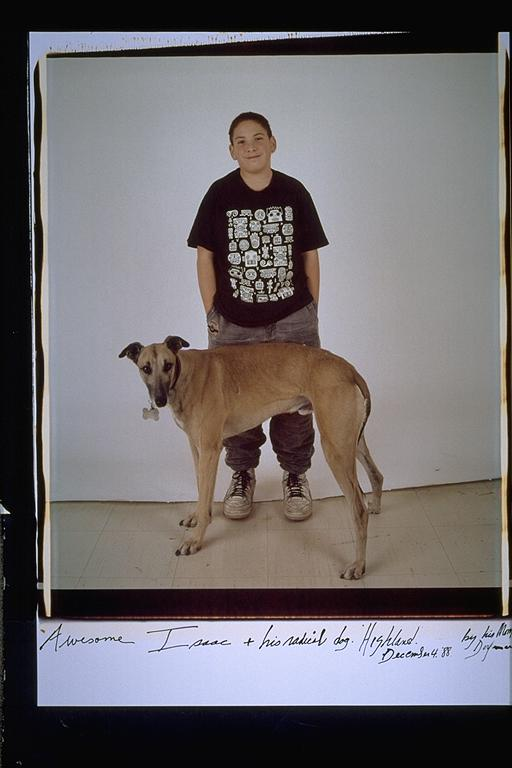

Aldo: Isaac's dog Highland. I remember this was Isaac's second dog. His first dog, which was also a greyhound, was Moozer. The reason, I remember that this was his second dog is because he used to complain that his dog wasn't even clever enough to climb the steps. So, I always felt sorry this cute dog that would inevitably live its life on the first floor.
Eugene: The Silverglate/Dorfmans & The Greyhounds -- I remember trying to teach the greyhounds how to go up and down stairs at the Widener Library at Harvard Yard. I also remember Isaac making all kinds of clay Greyhound figures in art class, and they are on his mantel to this day. The Dorfmans have a line on their phone system named after their dog. I also remember me and Isaac used to walk Moozer, which makes me remember the huge chestnut tree in front of the Silverglates' first house (and while I'm reminiscing) that makes me remember all of Isaac and my birthday parties, with the clown and the truck and watching the court jester in the attic.
Isaac: Well, this dog, Highland, was just dumb. Some would defend him and say that he was timid, unadventuresome, or shell-shocked from a life of isolation at the racetrack. I believe he was just dumb. Couldn't climb stairs, walk on bricks, ate furniture... He didn't last long in our house.
